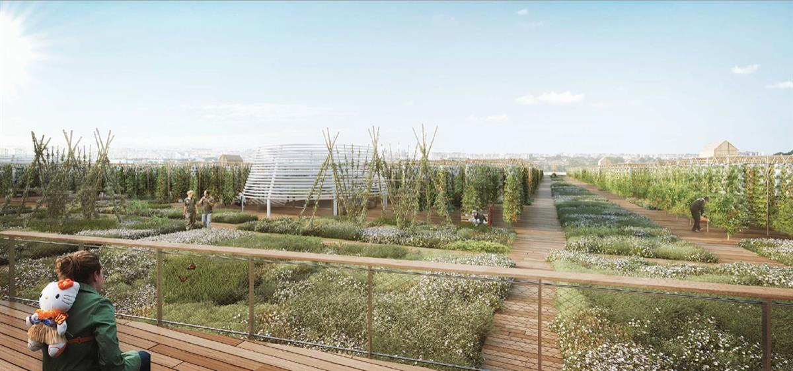
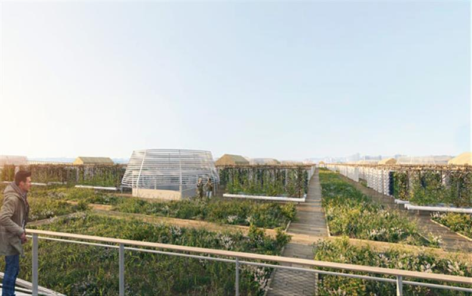

Paris will soon be home to the world's largest urban rooftop farm ©Viparis
The world's largest urban farm is coming to a Paris rooftop
With a rooftop view over one of the most densely-populated cities in Europe, it's an unlikely place to provide fresh food and green spaces but the high-rise Porte de Versailles in Paris is where you'll find the world's largest urban farm.
Paris is cutting back on its carbon footprint by growing its own produce in the city. Porte de Versailles in the 15th arrondissement, a sprawling cultural complex just 15 minutes from the Eiffel Tower, is the site of the world's largest urban farm. By spring 2020, the rooftop of the six-storey building will be transformed into a green paradise of produce. What's more, Le Perchoir, Paris's renowned chain of rooftop venues, will open a bar and restaurant on the panoramic terrace, with a farm-to-fork menu that includes produce grown on site.

The rooftop farm will provide food to restaurants, hotels and supermarkets in southern Paris ©ViparisOccupying 14,000 square metres of space (about the size of two football pitches) the farm will be home to more than 20 market gardens providing more than 2000 pounds of fruit and vegetables a day in season, from about 30 different varieties of plants. The plants will grow vertically through aeroponic farming, a method that uses a solution of nutrient-rich mist and rainwater to nourish the produce. Using only 10% of the water needed in traditional agricultural settings, it's a more sustainable method of farming.
Taking things to the next level, the farm will offer a range of services related to urban agriculture: educational tours and team-building workshops for companies. Local residents will be able to secure about 140 vegetable plots, effectively turning the garden into a community space.

Locals can lease vegetable plots with 140 spaces up for grabs ©Viparis
Viparis, the people behind Porte de Versailles, teamed up with two companies specialising in urban agriculture, Agripolis and Cultures en Ville, to bring the rooftop farm to life. Agripolis will operate the farm, while Cultures en Ville will handle services and events.
'By installing working farms on the sites we operate, we are helping to foster environmental and economic resilience in tomorrow's cities. This is our guiding principle,' said Pablo Nakhlé Cerruti, the CEO of Viparis. 'To this end, the Paris Expo Porte de Versailles site will supply restaurants in the complex, primarily Le Perchoir, but also residents of southern Paris and neighbouring municipalities, either directly or through distribution, company canteens and hotels.'
The urban rooftop farm will open in spring 2020. To stay updated on news and events, see here.
SOURCE: LONELY PLANET